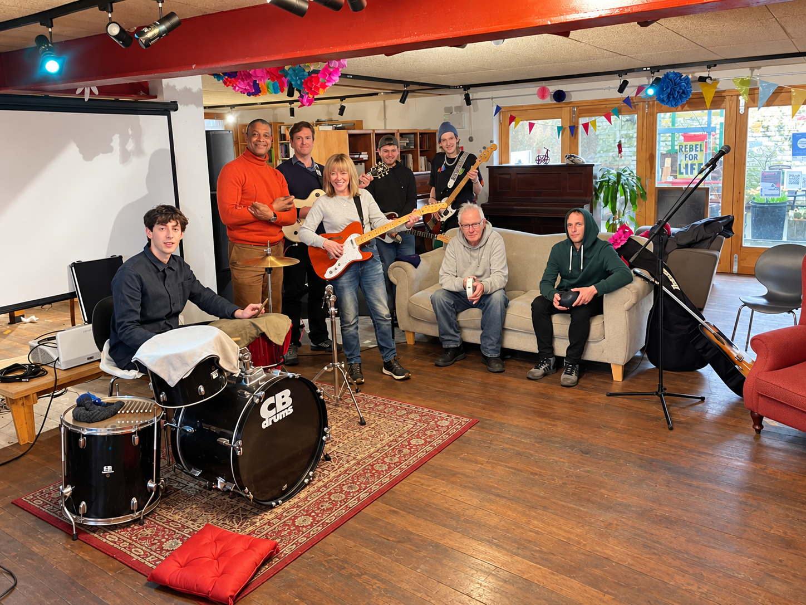
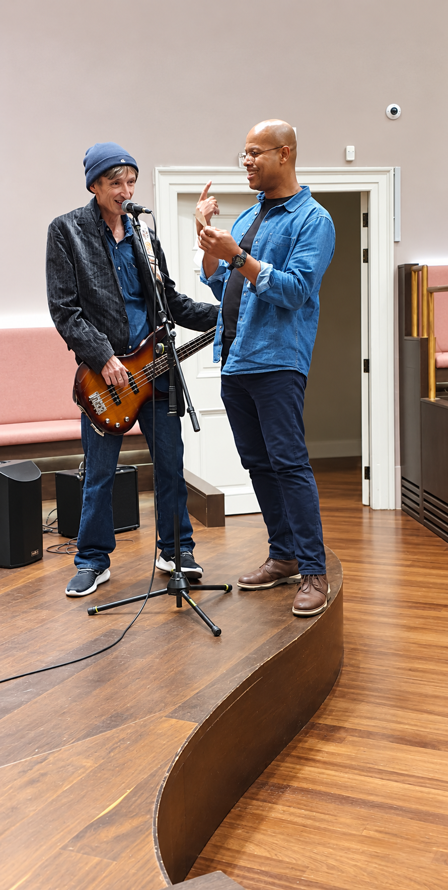

“It gives
me a boost.”
me a boost.”
Rediscovering
identity
through music.
Music is not the destination.
It is the meeting place.
A creative space where people come together to make music, explore what matters, and find new ways forward.
Find out more →RECOVERY THROUGH MUSIC
A welcoming space
for creativity, connection
and change.
At Recovery Through Music (RTM) we bring people together to make music in a non-judgemental, supportive environment. Through shared creativity, participants can reconnect with themselves and others, build confidence, and begin to see new possibilities.
Participation matters more than perfection.
You do not need to arrive as a musician.

THE RTM EXPERIENCE
Find your own way
into the room.
Some days begin with a song. Others with a conversation, a quiet moment or simply listening. There is room to join in at your own pace.
You might play, sing, write, improvise, reflect or simply be present. There is no single way to take part.

INSIDE AN RTM SESSION
There is a rhythm to the room.
An RTM session has a rhythm, but no two sessions are quite the same.
ARRIVE · NOTICE · LISTEN · CREATE · REFLECT · CONNECT
MADE TOGETHER AT RECOVERY THROUGH MUSIC
Listen to what can
happen in the room.
The music created at RTM grows out of participation, experimentation and shared experience. These recordings are moments made together rather than performances of perfection.
New Me
MORE THAN MUSIC
Connection. Confidence. Expression.
Contribution. Belonging. Wellbeing.
RTM is a community music and wellbeing organisation. We create spaces where people can take part, connect with others, express themselves and contribute in ways that feel meaningful.
Music is the way in, but the experience can reach much further — supporting confidence, belonging, reflection and new possibilities.
SEE THE PERSON BEFORE THE PROBLEM
Everyone has
something
to bring.
Difficult experiences can begin to define how someone is seen — by services, by society and sometimes by themselves.
RTM begins somewhere else.
We stay curious about what is still present: creativity, humour, imagination, experience, relationships and the capacity to contribute.
Making room for someone’s voice and imagination can help bring forward parts of themselves that difficult experiences may have pushed into the background.
PARTICIPANT VOICES
“A lifeline.”
“Good for the soul.”
Different people. Different experiences.
A shared place to make something together.
“Coming here gives me a boost.”
“A saver.”
“It's like going to three AA meetings at once.”
ROOTED IN EDINBURGH
A weekly community.
An approach that travels.
Our weekly community is the heart of RTM: a place to return to, build relationships, make music and take part at your own pace.
It grows through continuity rather than a fixed programme. People come back, contribute and help shape the room together.
SINCE FEBRUARY 2023building a continuous weekly community through music
CONNECTION IN DIFFERENT SETTINGS
Alongside the weekly community, RTM has brought music-making into HMP Edinburgh and HMP Perth, and worked alongside recovery, wellbeing and community partners.
Each setting is different, but the starting point remains the same: see the person, invite participation, and make space for what they can bring.
GET INVOLVED
There’s more than one
way to be part of this.
01
JOIN IN ↗
Interested in taking part in the weekly RTM community? You do not need to arrive as a musician.
02REFER SOMEONE ↗
If you work with someone who might benefit from a creative, welcoming community, we’d be happy to talk.
03WORK WITH RTM ↗
We work with organisations interested in bringing participatory music-making into recovery, justice, wellbeing and community settings.
04SUPPORT RTM ↗
Help us sustain accessible music-making, equipment and opportunities for people to participate.
LET’S START A CONVERSATION
Make a connection.
Whether you’re interested in taking part, making a referral, working with RTM or supporting the project, we’d be glad to hear from you.